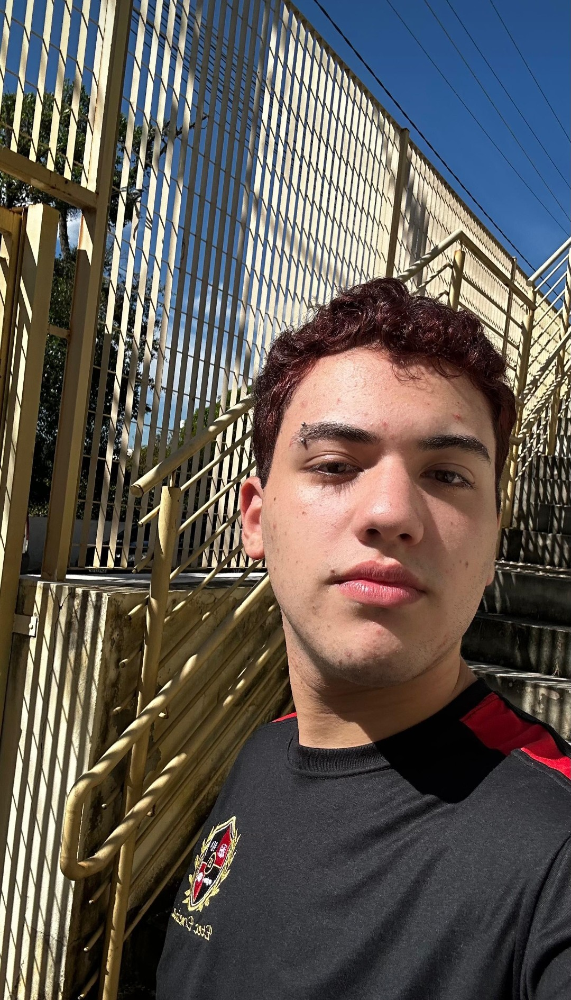

|  |
Caio Henrique de Morais Candido nasceu em São Paulo, no dia 25 de Novembro de 2008. Filho de uma vendedora chamada Ilca. Estudou na escola Imídio Giuseppe Nérici, e desde criança sempre foi apaixonado pela área de TI. E atualmente estuda com o que sempre sonhou, Desenvolvi- mento de Sistemas, na escola estadual, ETEC Ermelinda Giannini Teixeira, em Santana de Parnaíba. |